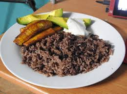

Gallo pinto

Descripción
Comida tradicional nicaragüense ideal para desayuno, almuerzo o cena,
elaborada de arroz y frijoles
Ingredientes
- aceite vegetal
- arroz
- frijolesa
- cebolla
Pasos
- En un sartén caramelicen un cuarto de cebolla
- Incorpore los frijoles y déjelos conservar
- Incorpore el arroz y homogeniza la mezcla
- Tueste al gusto